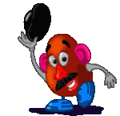
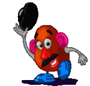
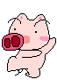
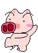
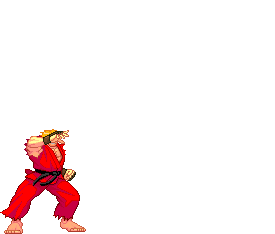
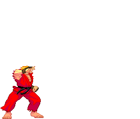

心
理治療或心理諮商透過對話促進當事人認識與接近自己，以日常生活、與他人的互
動、具特殊意義之事為素材，透過聆聽與對話觸及深層自我，進 而引發療癒的可能 性。 心
理治療或心理諮商透過對話促進當事人認識與接近自己，以日常生活、與他人的互
動、具特殊意義之事為素材，透過聆聽與對話觸及深層自我，進 而引發療癒的可能 性。
心
理治療或心理諮商透過對話促進當事人認識與接近自己，以日常生活、與他人的互
動、具特殊意義之事為素材，透過聆聽與對話觸及深層自我，進 而引發療癒的可能 性。 心
理治療或心理諮商透過對話促進當事人認識與接近自己，以日常生活、與他人的互
動、具特殊意義之事為素材，透過聆聽與對話觸及深層自我，進 而引發療癒的可能 性。


| 方案 |
內 容 |
費用 |
| 「我想成為痛苦的蘇格拉底」 | 古希臘哲學課程 |
未定 |
「我想成為快樂的豬」 |
也許試試CBT |
同上 |
| 「我想成為蝙蝠俠」 | seriously? |
同上上 |
| 請洽靈
幻新隆老師 |
同上上上 |


 

 



 
